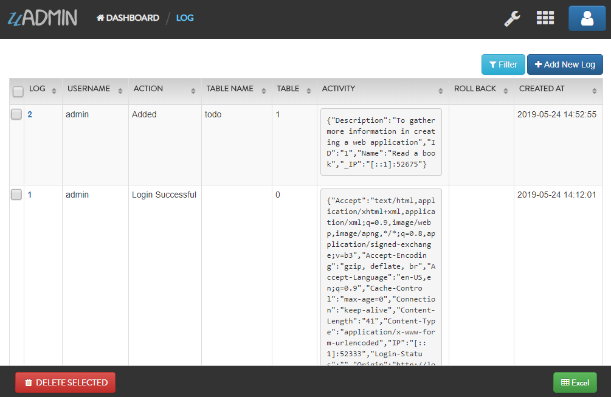
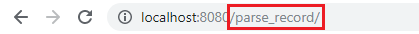
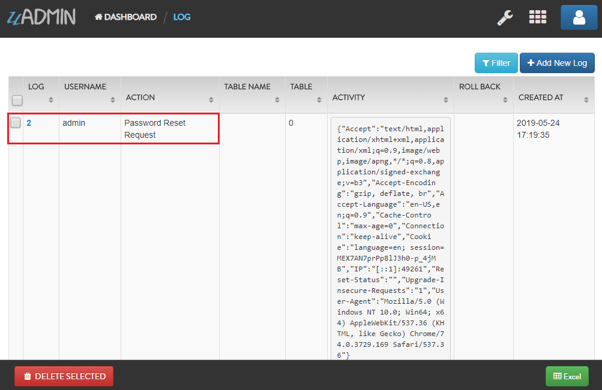
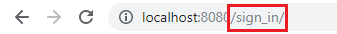
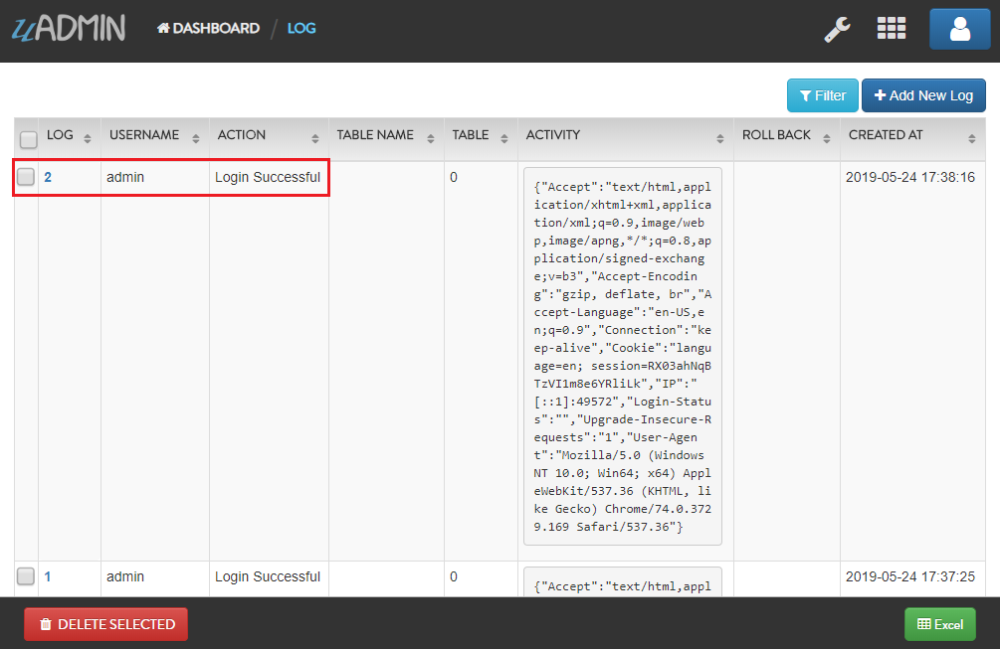

uadmin.Log¶
Log is a system in uAdmin that is used to add, modify, and delete the status of the user activities.
Structure:
type Log struct {
Model
Username string `uadmin:"filter;read_only"`
Action Action `uadmin:"filter;read_only"`
TableName string `uadmin:"filter;read_only"`
TableID int `uadmin:"filter;read_only"`
Activity string `uadmin:"code;read_only" gorm:"type:longtext"`
RollBack string `uadmin:"link;"`
CreatedAt time.Time `uadmin:"filter;read_only"`
}
There are 11 types of actions:
Added - Saved a new record
Custom - For any other action that you would like to log
Deleted - Deleted a record
LoginDenied - User invalid login
LoginSuccessful - User login
Logout - User logout
Modified - Save an existing record
PasswordResetDenied - A password reset attempt was rejected
PasswordResetRequest - A password reset was received
PasswordResetSuccessful - A password was reset
Read - Opened a record
There are 5 functions that you can use in Log:
ParseRecord - It means to analyze a record specifically. It uses this format as shown below:
func(a reflect.Value, modelName string, ID uint, user *User, action Action, r *http.Request) (err error)
Parameters:
a reflect.Value: An interface initialized in NewModel function
modelName string: The name of the model in lowercase letters
ID uint: The ID of the model
user *User: What account is using in the session
action Action: An activity status
r *http.Request: A data structure that represents the client HTTP request
Go to Example #2: ParseRecord function to see how ParseRecord works.
PasswordReset - It keeps track when the user resets his password. It uses this format as shown below:
func(user string, action Action, r *http.Request) (err error)
Parameters:
user string: An account username
action Action: An activity status
r *http.Request: A data structure that represents the client HTTP request
Go to Example #3: PasswordReset function to see how PasswordReset works.
Save() - Saves the object in the database
SignIn - It keeps track when the user signs in his account. It uses this format as shown below:
func(user string, action Action, r *http.Request) (err error)
Parameters:
user string: An account username
action Action: An activity status
r *http.Request: A data structure that represents the client HTTP request
Go to Example #4: SignIn function to see how SignIn works.
String() - Returns the Log ID
Examples:
Example #1: Assigning values in Log fields¶
Go to the main.go and apply the following codes below after the RegisterInlines section.
func main(){
// Some codes
log := uadmin.Log{
Username: "admin",
Action: uadmin.Action.Custom(0),
TableName: "Todo",
TableID: 1,
Activity: "Custom Add from the source code",
RollBack: "",
CreatedAt: time.Now(),
}
// This will create a new log based on the information assigned in
// the log variable.
log.Save()
// Returns the Log ID
uadmin.Trail(uadmin.INFO, "String() returns %s.", log.String())
}
Now run your application and see what happens.
Terminal
[ INFO ] String() returns 1.

Example #2: ParseRecord function¶
Suppose you have this log record as shown below:
And you have a record that has an ID of 1 in your Todo model that has an ID of 9.

Create a file named parserecord.go in the API folder and apply the following codes below:
package api
import (
"net/http"
"strings"
"github.com/uadmin/uadmin"
)
// ParseRecordAPIHandler !
func ParseRecordAPIHandler(w http.ResponseWriter, r *http.Request) {
// r.URL.Path creates a new path called /parse_record
r.URL.Path = strings.TrimPrefix(r.URL.Path, "/parse_record")
// Get the session key
session := uadmin.IsAuthenticated(r)
// Initialize the log model from uAdmin
log := uadmin.Log{}
// Call the category model and set the pointer to true
m, _ := uadmin.NewModel("todo", true)
// Get the first record in todo model
uadmin.Get(m.Interface(), "id = 1")
// Change the name to "Read a magazine" in the first record
uadmin.Update(m.Interface(), "Name", "Read a magazine", "id = 1")
// m - An interface initialized in NewModel function
// "todo" - Assigned model name
// 9 - The ID of the Todo model
// &session.User - Returns the full name of the user
// log.Action.Modified() - An action status that says Modified
// r - A data structure that represents the client HTTP request
log.ParseRecord(m, "todo", 9, &session.User, log.Action.Modified(), r)
// Save the parsed log record
log.Save()
}
Establish a connection in the main.go to the API by using http.HandleFunc. It should be placed after the uadmin.Register and before the StartServer.
func main() {
// Some codes
// ParseRecordAPIHandler
http.HandleFunc("/parse_record/", api.ParseRecordAPIHandler)
}
Now run your application and go to /parse_record/ path in the address bar after the host link (e.g. http://localhost:8080/parse_record/). This will not print anything but a white screen.
Go to uAdmin dashboard and click on “LOGS” to see the result.

As expected, the new record was saved in the logs.

Example #3: PasswordReset function¶
Suppose you have this log record as shown below:

And you have the System Admin record that has an ID of 1.

Create a file named passwordreset.go in the API folder and apply the following codes below:
package api
import (
"net/http"
"strings"
"github.com/uadmin/uadmin"
)
// PasswordResetAPIHandler !
func PasswordResetAPIHandler(w http.ResponseWriter, r *http.Request) {
// r.URL.Path creates a new path called /password_reset
r.URL.Path = strings.TrimPrefix(r.URL.Path, "/password_reset")
// Initialize the log model from uAdmin
log := uadmin.Log{}
// Initialize the user model from uAdmin
user := uadmin.User{}
// Get the first record in todo model
uadmin.Get(&user, "id = ?", 1)
// user.Username - Gets the username value from the user model
// log.Action.PasswordResetRequest() - An action status that says
// PasswordResetRequest
// r - A data structure that represents the client HTTP request
log.PasswordReset(user.Username, log.Action.PasswordResetRequest(), r)
// Save the log record
log.Save()
}
Establish a connection in the main.go to the API by using http.HandleFunc. It should be placed after the uadmin.Register and before the StartServer.
func main() {
// Some codes
// PasswordResetAPIHandler
http.HandleFunc("/password_reset/", api.PasswordResetAPIHandler)
}
Now run your application and go to /password_reset/ path in the address bar after the host link (e.g. http://localhost:8080/password_reset/). This will not print anything but a white screen.

Go to uAdmin dashboard and click on “LOGS” to see the result.
As expected, the new record was saved in the logs.
Example #4: SignIn function¶
Suppose you have this log record as shown below:
And you have the System Admin record that has an ID of 1.
Create a file named signin.go in the API folder and apply the following codes below:
package api
import (
"net/http"
"strings"
"github.com/uadmin/uadmin"
)
// SignInAPIHandler !
func SignInAPIHandler(w http.ResponseWriter, r *http.Request) {
// r.URL.Path creates a new path called /sign_in
r.URL.Path = strings.TrimPrefix(r.URL.Path, "/sign_in")
// Initialize the log model from uAdmin
log := uadmin.Log{}
// Initialize the user model from uAdmin
user := uadmin.User{}
// Get the first record in todo model
uadmin.Get(&user, "id = ?", 1)
// user.Username - Gets the username value from the user model
// log.Action.LoginSuccessful() - An action status that says
// LoginSuccessful
// r - A data structure that represents the client HTTP request
log.SignIn(user.Username, log.Action.LoginSuccessful(), r)
// Save the log record
log.Save()
}
Establish a connection in the main.go to the API by using http.HandleFunc. It should be placed after the uadmin.Register and before the StartServer.
func main() {
// Some codes
// SignInAPIHandler
http.HandleFunc("/sign_in/", api.SignInAPIHandler)
}
Now run your application and go to /sign_in/ path in the address bar after the host link (e.g. http://localhost:8080/sign_in/). This will not print anything but a white screen.
Go to uAdmin dashboard and click on “LOGS” to see the result.
As expected, the new record was saved in the logs.
